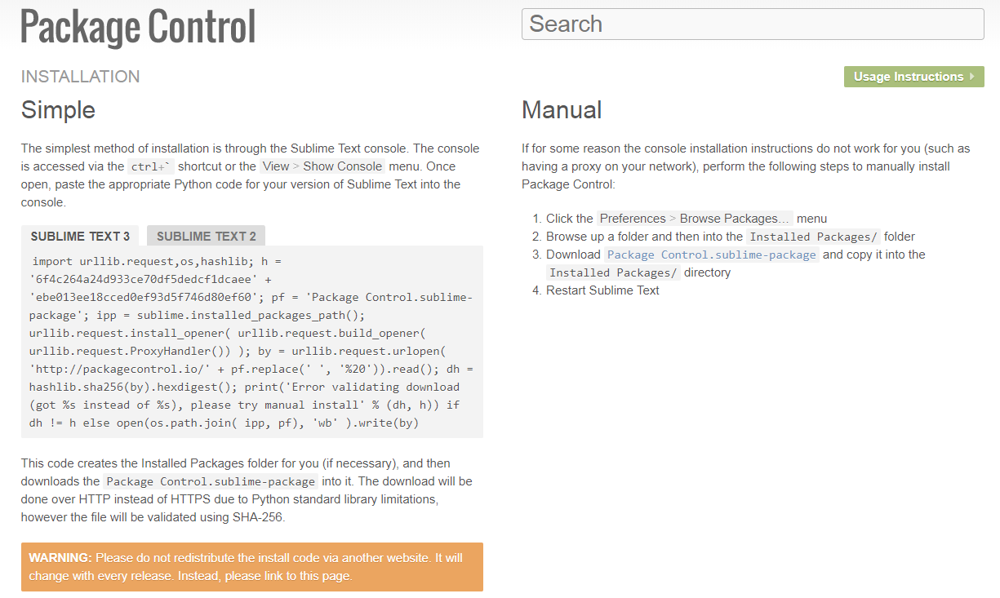
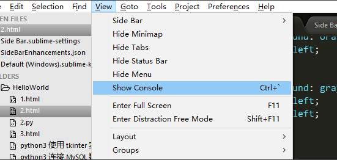
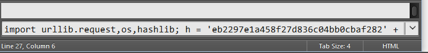
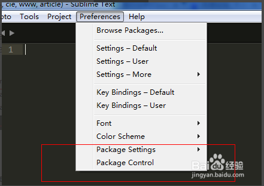
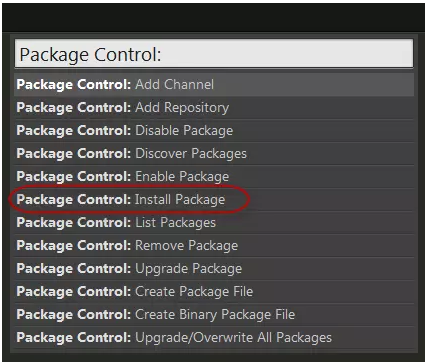
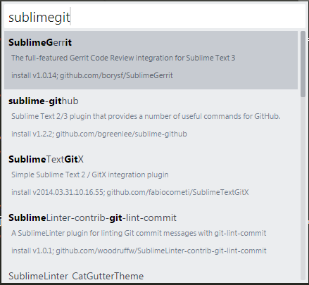
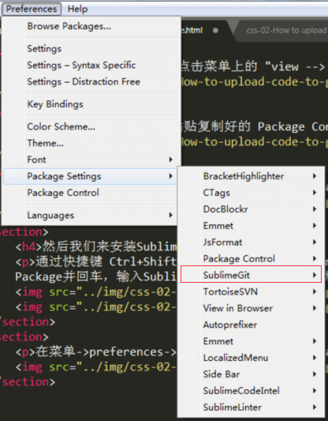

【css-02】
小课堂【深圳 第401期】如何基于git使用Sublime将代码上传至github？
分享人：张峻
目录
1.背景介绍
2.知识剖析
3.常见问题
4.解决方案
5.编码实战
6.扩展思考
7.参考文献
8.更多讨论
1.背景介绍
Git介绍
Git是开源的分布式版本控制系统，用于敏捷高效地处理任何或小或大的项目。 分布式相比于集中式的最大区别在于开发者可以提交到本地，每个开发者通过克隆 （git clone），在本地机器上拷贝一个完整的Git仓库。
通俗的说，就是一个管理代码历史记录的工具,当多人协作时可以相互推送各自的修改。
github介绍
GitHub 是一个面向开源及私有软件项目的托管平台，因为只支持 Git 作为唯一的版本库格式进行托管，故名 GitHub。 付费用户可以建私人仓库，我们一般的免费用户只能使用公共仓库，也就是代码要公开。

为什么要使用Sublime将代码上传至github？
因为每当我们要将代码上传到github时都会使用到git这个软件，然而使用git需要输入那些命令行来操作，是不是觉得很麻烦不方便？
但是我们可以使用Sublime就能很方便的将代码上传到github
Sublime介绍
Sublime Text 是一个代码编辑器，也是HTML和先进的文本编辑器。Sublime Text是由程序员Jon Skinner于2008年1月份所开发出来，它最初被设计为一个具有丰富扩展功能的Vim。
Sublime Text具有漂亮的用户界面和强大的功能，例如代码缩略图，Python的插件，代码段等。还可自定义键绑定，菜单和工具栏。Sublime Text 的主要功能包括：拼写检查，书签，完整的 Python API ， Goto 功能，即时项目切换，多选择，多窗口等等。
Sublime的优点
- 主流前端开发编辑器
- 体积较小，运行速度快
- 文本功能强大
- 支持编译功能且可在控制台看到输出
- 内嵌python解释器支持插件开发以达到可扩展目的
- Package Control：Sublime支持的大量插件可通过其进行管理
2.知识剖析
如何基于git使用Sublime将代码上传至github？
- 开始之前你需要做一些准备：
- 1、安装Sublime,然后通过Package control这个拓展包管理器，装sublimeGit这个插件。
- 2、安装git并且搞定配置问题。
Package Control插件本身是一个为了方便管理插件的插件
- 安装方法:
- 1.登录Package Control网站：https://packagecontrol.io/installation 
根据你的 Sublime Text 版本，复制相应的代码
在 Sublime 中，点击菜单上的 "view -> show console" 或按 "Ctrl + `"快捷键，打开控制台。
在控制台命令输入栏，粘贴复制好的 Package Control 安装代码，回车运行。
在菜单->preferences->Package Settings和package control选项，就说明安装package control成功了。
然后我们来安装SublimeGit这个插件
通过快捷键 Ctrl+Shift+P（菜单 – Tools – Command Paletter），输入 install 选中Install Package并回车，输入SublimeGit找到这个插件回车就安装了（注意左下角的小文字变化，会提示安装成功）。
 在菜单->preferences->Package Settings选项里面看到SublimeGit，就说明安装SublimeGit成功了。
3.常见问题
git有什么优缺点？
4.解决方案
Git优缺点
- 优点：
- 1、适合分布式开发，强调个体。
- 2、公共服务器压力和数据量都不会太大。
- 3、速度快、灵活。
- 4、任意两个开发者之间可以很容易的解决冲突。
- 5、可以离线工作
- 缺点：
- 1、学习周期相对而言比较长。
- 2、不符合常规思维。
- 3、代码保密性差，一旦开发者把整个库克隆下来就可以完全公开所有代码和版本信息。
- 4、不支持中文，图形界面支持差，使用难度大。不易推广
5.代码实战
6.拓展思考
如何使用Sublime将代码上传到SVN
7.参考文献
8.更多讨论
鸣谢
感谢大家观看
BY :颜彦 | 张峻